Radio astronomy depends on detecting extraordinarily faint signals that have travelled across cosmological distances. Terrestrial and satellite technologies, including mobile networks, aircraft transponders, satellite communications, and digital broadcast, emit at the same frequencies used by natural astrophysical sources, and this radio frequency interference (RFI) can be orders of magnitude stronger than the signal of interest. Left uncorrected, RFI can render observations scientifically unusable (Baan et al., 2004).
Two broad mitigation strategies exist. Classical flaggers such as AOFlagger (Offringa et al., 2012) use statistical and morphological heuristics to identify contaminated time–frequency pixels; they are fast and mature but require manual re-tuning for every telescope and degrade as the RFI environment becomes more complex (Offringa et al., 2010). Supervised deep learning instead learns a detector directly from labelled data, and has been shown to outperform classical flaggers on real observations without hand-engineered features (Vafaei Sadr et al., 2020; Gu et al., 2024). The dominant deep architectures in this space are U-Net-style encoder-decoders (Ronneberger et al., 2015; du Toit et al., 2023), which double the channel width at every downsampling stage. This channel-doubling schedule grows parameter count quickly and is a poor fit for the strict compute and latency budgets of real-time telescope pipelines, a constraint that will only tighten as the SKA begins producing data faster than existing flagging infrastructure can process (Sclocco et al., 2020).
We address this efficiency gap with the Fractal Neural Network (FNN). FNNSeg, the segmentation variant, keeps the U-Net encoder–decoder scaffold but (i) replaces the double-convolution block with a FractalBlock, a self-similar recursive module in which two parallel sub-branches of differing effective depth are merged through a learned 1×1 projection, and (ii) replaces channel-doubling with a Fibonacci-sequence channel schedule, whose growth ratio converges to the golden ratio φ ≈ 1.618 rather than 2. We hypothesise that this combination of implicit multi-path ensembling and sub-geometric channel growth better matches the multi-scale, self-similar morphology of RFI than fixed-depth convolutional blocks, while substantially reducing parameter count.
1. Can a Fractal Neural Network with Fibonacci channel scheduling match or exceed established deep-learning baselines for RFI segmentation on real telescope data?
2. Does its parameter-efficiency advantage hold across datasets with different label quality and telescope configurations?
3. How does label quality (pixel-perfect simulation labels, AOFlagger heuristic labels, and real expert-annotated labels) affect each architecture, and does FNNSeg degrade more gracefully than larger baselines under noisier supervision?
RFI mitigation. Post-correlation flagging is the dominant operational approach to RFI mitigation. AOFlagger (Offringa et al., 2012) combines Gaussian bandpass estimation with the SumThreshold morphological algorithm and is deployed operationally on LOFAR, WSRT, HERA and MeerKAT; its accuracy is sensitive to manually tuned thresholds and degrades in high-RFI environments (Offringa et al., 2010; Baan et al., 2004). Early machine-learning approaches used hand-engineered features (e.g. random-forest classifiers on statistical descriptors) for RFI detection (Mosiane et al., 2016), improving recall over fixed-threshold flaggers but generalising poorly to unfamiliar interference. Vafaei Sadr et al. (2020) reframed RFI detection as end-to-end supervised pixel classification on 2D time–frequency images, a template followed by subsequent CNN-based work, including this paper.
Encoder–decoder segmentation. U-Net (Ronneberger et al., 2015) and its residual extension (He et al., 2016) are the standard architectures for pixel-level RFI segmentation. du Toit et al. (2023) provide the most systematic public comparison to date, benchmarking eight architectures on the same HERA and LOFAR data used here; their best model, RFI_NET (805K parameters), reaches F1 = 0.9936 on HERA-PP, while a much smaller decoder-only model, RNET (32K parameters), reaches F1 = 0.9895, demonstrating that large capacity is not strictly necessary for this task, but leaving open whether a principled, non-doubling channel schedule could close the remaining gap at low parameter cost. That is the gap FNNSeg targets. Gu et al. (2024) add explicit attention and multi-scale branches to a U-Net for RFI detection; Zhang et al. (2024) propose RFI-DRUnet, which jointly flags and reconstructs contaminated spectra. FNNSeg does not use explicit attention but achieves a related effect implicitly: the parallel paths within each FractalBlock process features at different effective depths (2, 4, 8 convolutional layers), providing built-in multi-scale aggregation without extra attention modules.
Fractal architectures. FractalNet (Larsson et al., 2017) showed that ultra-deep networks built from a recursive fractal expansion rule, regularised with drop-path (branch-level stochastic depth), can match residual networks without explicit skip connections, because the resulting parallel paths of different depth act as an implicit ensemble. We adapt this block design for dense segmentation by embedding it in a U-Net scaffold, and combine it with a Fibonacci channel schedule, an aspect not explored in the original FractalNet, motivated by the golden-ratio growth rate observed in many self-similar natural structures.
Why not transformers? Vision Transformers (Dosovitskiy et al., 2020) and segmentation variants such as SegFormer (Xie et al., 2021) require large pretraining corpora to generalise; HERA and LOFAR provide only 1,120 and 7,465 training frames respectively, one to two orders of magnitude below typical ViT pretraining scale. Pixel-level self-attention over a 512×512 frame also has a 262,144-token sequence length, intractable without aggressive windowing that discards the global receptive field transformers are meant to provide. Fully convolutional architectures retain the locality and translation-equivariance priors that match RFI's localised time–frequency structure, at a small fraction of the parameter budget (218K vs. 86M+ for a standard ViT backbone), a decisive advantage for edge deployment.
Evaluation framework. Liang et al. (2023) show that the choice of RFI detection method measurably affects downstream science (HI galaxy detection rates), motivating evaluation on real telescope data rather than synthetic data alone. Sclocco et al. (2020) show that for real-time transient-detection pipelines such as Apertif, computational efficiency is as much a hard constraint as detection accuracy, directly motivating FNNSeg's parameter-efficiency focus.
FNNSeg follows a U-Net-style encoder–decoder with D=3 downsampling stages, a bottleneck, and 3 corresponding upsampling stages with skip connections, closing with a 1×1 output convolution that produces a single-channel per-pixel RFI logit. At every resolution level, the standard double-convolution block is replaced by a FractalBlock.
A FractalBlock of recursion depth d contains two parallel branches: a shallow ConvBlock (two 3×3 convolutions, each followed by BatchNorm and SiLU), and a recursive branch consisting of two child FractalBlocks of depth d−1 run in parallel. At the base case (d=1), the block reduces to a single ConvBlock. Branch outputs are concatenated and merged with a learned 1×1 convolution at every level of the recursion. At d=3 (used for every encoder, bottleneck, and decoder stage in this work), the block contains four parallel leaf ConvBlocks whose outputs are progressively merged across two levels, giving effective receptive-field depths of 2, 4, and 8 convolutional layers within a single block: an implicit multi-scale representation without explicit attention or multi-branch design.
Standard U-Net doubles channel width at each stage (e.g. [16, 32, 64] for base_ch = 16). FNNSeg instead uses multipliers taken from the Fibonacci sequence (1, 1, 2, 3, 5, …) at positions 2–4, giving multipliers [1, 2, 3] and encoder widths [16, 32, 48]; the bottleneck uses 2×48 = 96 channels. Because consecutive Fibonacci numbers converge to the ratio φ ≈ 1.618, this schedule grows sub-geometrically (between linear and doubling), reducing the final encoder stage's parameter count by roughly 56% relative to standard doubling while preserving representational capacity via the fractal block's multi-path structure. The complete FNNSeg model has 218,609 parameters for 2-channel (HERA) input, versus 482,593 for U-Net and 1,614,977 for ResU-Net built with the same base width and depth: a 2.2× and 7.4× reduction respectively.
FNNSeg optionally supports drop-path (branch-level stochastic depth; Larsson et al., 2017), disabled (drop_path_rate = 0) in the reported experiments after preliminary sweeps found no benefit at this training budget, but retained in the architecture (rates up to 0.2 are supported); see Appendix C.1 for the full synthetic-data ablation that motivated this and the other architecture hyperparameters (stage count, base channel width, Fibonacci vs. separable convolutions) used throughout Sections 3–6. All models are trained with DiceBCELoss, an equal-weighted combination of Dice loss and binary cross-entropy,
which directly optimises F1 while retaining well-calibrated pointwise probabilities, a combination shown to outperform either loss alone on class-imbalanced segmentation (Milletari et al., 2016); this is relevant here since RFI typically occupies only 1–10% of pixels. All models use Adam (Kingma & Ba, 2014; lr=10⁻³, β₁=0.9, β₂=0.999, no weight decay) with cosine-annealed learning rate decaying to 0, early stopping (patience 7 on validation F1), and identical hyperparameters across architectures and datasets to isolate the effect of architecture choice.
U-Net (Ronneberger et al., 2015): double-convolution blocks, max-pool downsampling, transposed-convolution upsampling, channel schedule [16, 32, 64]. This is the closest architectural analogue to FNNSeg, differing only in block type and channel schedule. Residual U-Net: identical scaffold with pre-activation residual blocks (He et al., 2016), included as a higher-capacity, higher-cost alternative.
Frames (512×512, log-amplitude transformed and z-score normalised using training-split statistics only) are split into 256×256 patches with 128-pixel (50%) stride, yielding 9 patches per frame, extracted on-the-fly during training to bound memory use.
All models are implemented in PyTorch (torch>=1.8.0, torchvision>=0.9.0; full dependency list in requirements.txt). The training script (scripts/train_hera.py) selects the fastest available backend automatically via a single get_device() utility: CUDA GPU, then Apple Metal Performance Shaders (MPS, only on Python ≥ 3.11), then CPU, and logs the selected device for every run.
Verified directly from the per-run training logs (logs/hera/ and fnn_rfi/logs/hera/): 3 of the 27 runs, HERA-PP seed 0 for all three architectures (FNNSeg, U-Net, ResU-Net), were trained on CPU with batch size 8. The CPU sweep proved too slow to complete a full 3-seed run in a reasonable time, so the remaining 24 runs, HERA-PP seeds 1 and 2 (6 runs) plus all 9 HERA-AOF runs and all 9 LOFAR runs, were trained on a CUDA GPU with batch size 32. Every other hyperparameter (learning rate, scheduler, epoch budget, patience, patch size and stride, and architecture configuration) is identical across all 27 runs. This means batch size is not fully constant even within the HERA-PP seed sweep (seed 0 vs. seeds 1–2); reassuringly, seed 0's per-model metrics are not outliers relative to seeds 1–2 (Appendix Table A1), suggesting the effect on the reported mean ± std is small, but it could not be fully disentangled from true seed variability, and we flag it explicitly in Section 7 (Limitations). Exact PyTorch/Python patch versions and a full environment lockfile are not currently pinned in the repository; we recommend adding one (e.g. pip freeze > requirements-lock.txt) to support exact reproducibility.
Wall-clock training time for the full 30-epoch budget (before early stopping could trigger): the three CPU-trained HERA-PP seed-0 runs took approximately 2–5 days each (~40–90 minutes per epoch, reflecting a shared personal machine rather than a dedicated compute cluster, with occasional multi-hour gaps between epochs consistent with the machine sleeping); the GPU-trained HERA-PP seed-1/seed-2 reruns took approximately 2–2.5 hours each (~5 minutes/epoch), closely matching the GPU-trained HERA-AOF runs (~2.5–3 hours, ~5.5 minutes/epoch) and LOFAR runs (~8 hours, ~16–17 minutes/epoch, reflecting its larger patch count).
We evaluate on three benchmarks released by du Toit et al. (2023) via Zenodo (DOI: 10.5281/zenodo.8275061): HERA-PP (HERA telescope, pixel-perfect simulation labels), HERA-AOF (same HERA observations, AOFlagger-derived labels), and LOFAR (real LOFAR observations with expert manual labels; derived from Mesarcik et al., 2022).
This choice of datasets is deliberate rather than incidental, for three reasons. First, using a single published, versioned benchmark with fixed train/test splits and a documented preprocessing protocol removes confounds that otherwise plague cross-paper comparisons: any F1 difference between this work and du Toit et al. (2023) is attributable to architecture, not to differing data splits, patch strategies, or normalisation. Raw archives at NRAO (HERA) and ASTRON (LOFAR) exist but require institutional access and do not ship the benchmark label masks used for training and evaluation, making the curated Zenodo release the only practical route to a like-for-like comparison. Second, HERA-PP and HERA-AOF share identical underlying observations but differ only in label source, which lets us isolate the effect of label quality on model behaviour independently of instrument or architecture: a controlled comparison that would be impossible with two different telescopes. Third, LOFAR is a structurally different telescope (different frequency range, array geometry, and RFI environment, with single-channel amplitude-only data) with real, expert-annotated interference; including it tests cross-instrument generalisation and avoids over-claiming from simulation-only results, directly addressing calls in the literature for evaluation on real rather than purely synthetic data (Liang et al., 2023). Together, the three datasets span the full quality spectrum a practitioner encounters in practice (perfect ground truth, heuristic labels, and real expert annotation), which is the axis of variation most relevant to RQ3.
| Dataset | Telescope | Label type | Train | Test | Frame size | Channels |
|---|---|---|---|---|---|---|
| HERA-PP | HERA | Pixel-perfect (simulation) | 1,120 | 280 | 512×512 | 2 (amp+phase) |
| HERA-AOF | HERA | AOFlagger heuristic | 1,120 | 280 | 512×512 | 2 (amp+phase) |
| LOFAR | LOFAR | Expert manual | 7,465 | 109 | 512×512 | 1 (amplitude) |
HERA (DeBoer et al., 2017) is a low-frequency array in the Karoo desert, South Africa; HERA-PP labels come from hera_sim-injected RFI with exact ground truth, while HERA-AOF labels come from AOFlagger applied to the same observations, and are known to systematically under-flag weak/diffuse RFI and over-flag bright astrophysical foregrounds. LOFAR (van Haarlem et al., 2013) operates at 10–240 MHz across a European baseline and provides the largest, most realistic, and most challenging benchmark (real aviation, GSM, and broadcast interference), at the cost of a small held-out test set (109 frames), which we flag as a source of test-metric noise (Section 6).
We use a full 3×3×3 factorial design: 3 models (FNNSeg, U-Net, ResU-Net) × 3 datasets (HERA-PP, HERA-AOF, LOFAR) × 3 seeds (0, 1, 2), giving 27 training runs, each reported as mean ± standard deviation (Bouthillier et al., 2021). Shared hyperparameters (patch size 256×256/stride 128, 30 epochs with early stopping at patience 7, base channels 16, encoder depth 3, fractal depth 3, Adam lr 10⁻³ with cosine annealing) were fixed across all models and datasets, matching du Toit et al. (2023) where applicable, to ensure architecture is the only varying factor within each dataset; batch size (8 for HERA-PP seed 0, 32 for HERA-PP seeds 1–2 and all HERA-AOF/LOFAR runs, tracking available hardware; see Section 3.7) is the one exception and is not fully constant even within the HERA-PP seed sweep, a deviation discussed in Section 3.7 and Section 7. All experiments are seeded (NumPy, Python random, PyTorch) and logged with full hyperparameters and checkpoints for reproducibility.
| Model | Params | Accuracy | F1 | AUC-ROC |
|---|---|---|---|---|
| FNNSeg | 218,609 | 0.999896 ± 0.000018 | 0.9952 ± 0.0008 | 0.9995 ± 0.0002 |
| U-Net | 482,593 | 0.999879 ± 0.000015 | 0.9944 ± 0.0007 | 0.9995 ± 0.0002 |
| ResU-Net | 1,614,977 | 0.999846 ± 0.000028 | 0.9929 ± 0.0013 | 0.9987 ± 0.0003 |
FNNSeg attains the highest F1 with the fewest parameters, beating U-Net on every individual seed and ResU-Net on all six seed comparisons. Against the published du Toit et al. (2023) benchmarks, FNNSeg's mean F1 (0.9952; best single seed 0.9964) exceeds RFI_NET (805K params, F1 = 0.9936), RNET (32K params, F1 = 0.9895), UNET (291K, 0.9869), ASPP_UNET (291K, 0.9863), DSC_DUAL_RESUNET (370K, 0.9859), DSC_MONO_RESUNET (185K, 0.9826) and RNET5 (19.8K, 0.9851): the only architecture in this comparison combining F1 ≥ 0.995 with ≤ 300K parameters.
| Model | Params | Accuracy | F1 | AUC-ROC |
|---|---|---|---|---|
| U-Net | 482,593 | 0.994564 ± 0.000033 | 0.7791 ± 0.0007 | 0.9793 ± 0.0040 |
| FNNSeg | 218,609 | 0.994423 ± 0.000085 | 0.7748 ± 0.0026 | 0.9775 ± 0.0013 |
| ResU-Net | 1,614,977 | 0.993978 ± 0.000087 | 0.7606 ± 0.0027 | 0.9719 ± 0.0026 |
All models drop from F1 ≈ 0.99 to F1 ≈ 0.77 under AOFlagger supervision, consistent with du Toit et al. (2023); this reflects the noise ceiling of the labels rather than model failure, since a model can at best reproduce the label distribution it is trained on. U-Net edges out FNNSeg here (ΔF1 = 0.0044), though the two are within a seed-variance margin of one another; ResU-Net trails both, with a validation/test inversion suggesting mild overfitting under noisy supervision.
| Model | Params | Accuracy | F1 | AUC-ROC |
|---|---|---|---|---|
| FNNSeg | 218,465 | 0.994597 ± 0.000015 | 0.6337 ± 0.0006 | 0.9646 ± 0.0070 |
| U-Net | 482,449 | 0.994470 ± 0.000044 | 0.6281 ± 0.0026 | 0.9593 ± 0.0022 |
| ResU-Net | 1,614,833 | 0.994273 ± 0.000043 | 0.6174 ± 0.0026 | 0.9227 ± 0.0011 |
FNNSeg leads on the hardest, most realistic benchmark, with markedly lower cross-seed variance (±0.0006 vs. ±0.0026 for both baselines), evidence that the fractal block's multi-path structure has a stabilising, ensemble-like effect under real, complex RFI. ResU-Net's AUC degrades most sharply from HERA-PP to LOFAR (0.9987 → 0.9227, Δ = −0.076) versus FNNSeg (0.9995 → 0.9646, Δ = −0.035), suggesting the larger model overfits telescope-specific idiosyncrasies more than the compact fractal network.
Across all three datasets, FNNSeg's relative F1 advantage over ResU-Net grows with task difficulty (HERA-PP: +0.002; HERA-AOF: U-Net leads by 0.004; LOFAR: +0.016), and its seed-to-seed variance is the lowest of the three architectures on the two hardest datasets, a practically relevant reliability property for deployment. Full per-seed tables, convergence curves, and a parameter-efficiency Pareto plot against all du Toit et al. (2023) baselines are provided in Appendix A.
Why fractal blocks outperform standard convolutions despite fewer parameters. We attribute the advantage to three properties, not to capacity: (i) implicit ensembling: the two parallel branches per FractalBlock, merged by a learned 1×1 projection, behave like an adaptive, spatially-varying ensemble of shallow and deep feature extractors; (ii) implicit multi-scale aggregation: the recursive depth exposes effective receptive fields of 2, 4, and 8 layers within a single block, matching RFI's simultaneous narrowband/broadband/complex morphology without explicit attention; (iii) Fibonacci channels as an information bottleneck: sub-geometric channel growth keeps intermediate feature maps compact, encouraging compact, generalisable representations rather than memorisation, which likely explains why the largest FNNSeg advantage appears on the hardest, most overfitting-prone dataset (LOFAR).
Label quality is a first-order effect. The gap between HERA-PP (F1 ≈ 0.99) and HERA-AOF (F1 ≈ 0.77) is far larger than any architecture effect observed in this study, underscoring that for practical deployment, investment in label quality (or noise-robust training, e.g. simulation pretraining followed by fine-tuning on heuristic labels) may yield larger returns than further architecture search.
Limitations. The LOFAR test set (109 frames) yields noisy F1 estimates, so differences below ΔF1 ≈ 0.01 should be treated cautiously; we did not evaluate zero-shot cross-telescope transfer (train on HERA, test on LOFAR); fractal depth, Fibonacci base, and drop-path rate were fixed by design rather than tuned on the evaluation benchmarks; FNNSeg has only been evaluated as a binary segmenter, not for multi-class RFI typing or joint detection-and-restoration (cf. Zhang et al., 2024); and, as noted in Section 3.7, only HERA-PP seed 0 (all three architectures) was trained on CPU with batch size 8; the remaining 24 runs (HERA-PP seeds 1–2, all HERA-AOF, all LOFAR) were trained on a CUDA GPU with batch size 32, a hardware-driven deviation that is not fully constant even within the HERA-PP seed sweep, though seed 0's metrics are not outliers relative to seeds 1–2 (Appendix Table A1).
Broader implications. A model reaching F1 = 0.9952 with 218K parameters is a strong candidate for INT8 quantisation and deployment on edge accelerators (e.g., FPGAs, Jetson-class devices) at the correlator output, enabling real-time flagging at data-acquisition time, a capability that will be necessary, not optional, for the SKA's data rates.
Exploratory extensions (synthetic data). Two task variants beyond segmentation, reported in full in Appendix C, were less successful and are reported for completeness rather than as contributions: a classification variant predicting RFI morphology type plateaued at 28–39% accuracy (chance = 20%) across seven architectures (Appendix C.2), and a dual-head restoration variant (FNNInpaint) reliably localised corrupted pixels (mask IoU 0.95–0.96) but could not reliably reconstruct the underlying clean signal (PSNR 0.8–12.2 dB, SSIM 0.16–0.49, Appendix C.3). Both remain open problems rather than completed results.
We presented FNNSeg, a fractal, Fibonacci-scheduled U-Net variant for RFI segmentation, and showed on three real-telescope benchmarks that it matches or exceeds U-Net, ResU-Net, and all eight architectures benchmarked by du Toit et al. (2023) on HERA-PP, while using 2.2–7.4× fewer parameters than our own baselines and 3.7× fewer than the strongest published model. The efficiency advantage is consistent across label qualities and telescopes, and grows on the hardest, most realistic benchmark (LOFAR), where FNNSeg also shows the lowest cross-seed variance. These results support fractal, sub-geometric-channel architectures as a practical, deployment-ready alternative to standard channel-doubling encoder-decoders for real-time RFI mitigation. Future work includes simulation-to-real fine-tuning to close the AOFlagger label-noise gap, self-supervised pretraining on unlabelled archives, a joint detection-and-restoration variant (FNNInpaint; preliminary synthetic-data results in Appendix C.3 show accurate corruption localisation but unreliable signal reconstruction), zero-shot cross-telescope transfer, and evaluation on simulated SKA-Low data.
All datasets are publicly available via Zenodo (du Toit et al., 2023; DOI: 10.5281/zenodo.8275061) under open-access terms; no personally identifiable information is involved. Training code, model definitions, configuration files, per-seed logs, and checkpoints are available at https://github.com/ada-k/fnn_rfi under the Apache-2.0 license.
We thank du Toit, Grobler, and Ludick (2023) for releasing the curated HERA and LOFAR benchmark datasets and baseline results via Zenodo, which enabled a direct, reproducible numerical comparison against published baselines.
Baan, W. A., Fridman, P. A., & Millenaar, R. P. (2004). Radio frequency interference mitigation at the Westerbork Synthesis Radio Telescope. The Astronomical Journal, 128(2), 933–952.
Bouthillier, X., et al. (2021). Accounting for variance in machine learning benchmarks. Proceedings of Machine Learning and Systems, 3, 747–769.
DeBoer, D. R., et al. (2017). Hydrogen Epoch of Reionization Array (HERA). PASP, 129(974), 045001.
Dosovitskiy, A., et al. (2020). An image is worth 16x16 words. arXiv:2010.11929.
du Toit, C., Grobler, T., & Ludick, D. (2023). A comparison framework for deep learning RFI detection algorithms in radio astronomy [Dataset]. Zenodo. https://doi.org/10.5281/zenodo.8275061
Gu, Z., Liu, J., Ma, S., Fan, G., Xu, F., & Cao, H. (2024). Radio frequency interference detection using efficient multi-scale convolutional attention UNet. arXiv:2404.06055.
He, K., Zhang, X., Ren, S., & Sun, J. (2016). Deep residual learning for image recognition. CVPR, 770–778.
Kingma, D. P., & Ba, J. (2014). Adam: A method for stochastic optimization. arXiv:1412.6980.
Larsson, G., Maire, M., & Shakhnarovich, G. (2017). FractalNet: Ultra-deep neural networks without residuals. ICLR.
Liang, Y.-F., et al. (2023). Detecting HI galaxies with deep neural networks in the presence of radio frequency interference. RAA, 23(11), 115006.
Mesarcik, M., Boonstra, A.-J., Ranguelova, E., & van Nieuwpoort, R. V. (2022). Learning to detect radio frequency interference in radio astronomy without seeing it. MNRAS, 516(4), 5367–5378. https://doi.org/10.1093/mnras/stac2503
Milletari, F., Navab, N., & Ahmadi, S.-A. (2016). V-Net: Fully convolutional neural networks for volumetric medical image segmentation. 3DV, 565–571.
Mosiane, O., Oozeer, N., & Bassett, B. A. (2016). Radio frequency interference detection using machine learning. 2016 IEEE Radio and Antenna Days of the Indian Ocean (RADIO), 1–2. https://doi.org/10.1109/RADIO.2016.7772036
Offringa, A. R., de Bruyn, A. G., Biehl, M., Zaroubi, S., Bernardi, G., & Pandey, V. N. (2010). Post-correlation radio frequency interference classification methods. MNRAS, 405(1), 155–167.
Offringa, A. R., van de Gronde, J. J., & Roerdink, J. B. T. M. (2012). A morphological algorithm for improving radio-frequency interference detection. A&A, 539, A95.
Ronneberger, O., Fischer, P., & Brox, T. (2015). U-Net: Convolutional networks for biomedical image segmentation. MICCAI, 234–241.
Sclocco, A., van Leeuwen, J., Bal, H. E., & van Nieuwpoort, R. V. (2020). Real-time RFI mitigation for the Apertif Radio Transient System. arXiv:2001.03389.
Vafaei Sadr, A., Bassett, B. A., Kunibe, E., & Oozeer, N. (2020). Deep learning improves identification of radio frequency interference. MNRAS, 499(1), 379–390.
van Haarlem, M. P., et al. (2013). LOFAR: The Low-Frequency Array. A&A, 556, A2.
Xie, E., Wang, W., Yu, Z., Anandkumar, A., Alvarez, J. M., & Luo, P. (2021). SegFormer. NeurIPS, 34, 12077–12090.
Zhang, J., Cognard, I., & Dobigeon, N. (2024). RFI-DRUnet: Restoring dynamic spectra corrupted by radio frequency interference. arXiv:2402.13867.
All 27 individual training runs (3 models × 3 datasets × 3 seeds) underlying Tables 2–4, read directly from the logged test-set results.
| Dataset | Split | Frames | Patches | Patch stride |
|---|---|---|---|---|
| HERA-PP / HERA-AOF | Train | 1,008 | 9,072 | 128px (50% overlap) |
| HERA-PP / HERA-AOF | Val | 112 | 448 | 256px (no overlap) |
| HERA-PP / HERA-AOF | Test | 280 | 1,120 | 256px (no overlap) |
| LOFAR | Train | 6,719 | 60,471 | 128px (50% overlap) |
| LOFAR | Val | 746 | 2,984 | 256px (no overlap) |
| LOFAR | Test | 109 | 436 | 256px (no overlap) |
Train and Val frame counts sum to the "Train" column of Table 1 (1,120 for HERA; 7,465 for LOFAR); a 90/10 train/val split (val_frac=0.1 in scripts/train_hera.py) is applied to that pool, while Test is the fully separate held-out split released by du Toit et al. (2023). Source: logs/hera/*.log (split construction messages logged by build_hera_loaders).
| Model | Seed | Params | Accuracy | F1 | AUC-ROC |
|---|---|---|---|---|---|
| FNNSeg | 0 | 218,609 | 0.999921 | 0.9964 | 0.9998 |
| FNNSeg | 1 | 218,609 | 0.999889 | 0.9949 | 0.9995 |
| FNNSeg | 2 | 218,609 | 0.999879 | 0.9944 | 0.9993 |
| U-Net | 0 | 482,593 | 0.999897 | 0.9953 | 0.9997 |
| U-Net | 1 | 482,593 | 0.999860 | 0.9936 | 0.9995 |
| U-Net | 2 | 482,593 | 0.999879 | 0.9944 | 0.9993 |
| ResU-Net | 0 | 1,614,977 | 0.999880 | 0.9945 | 0.9992 |
| ResU-Net | 1 | 1,614,977 | 0.999813 | 0.9914 | 0.9984 |
| ResU-Net | 2 | 1,614,977 | 0.999846 | 0.9929 | 0.9986 |
| Model | Seed | Params | Accuracy | F1 | AUC-ROC |
|---|---|---|---|---|---|
| FNNSeg | 0 | 218,609 | 0.994340 | 0.7724 | 0.9791 |
| FNNSeg | 1 | 218,609 | 0.994389 | 0.7734 | 0.9758 |
| FNNSeg | 2 | 218,609 | 0.994540 | 0.7784 | 0.9775 |
| U-Net | 0 | 482,593 | 0.994596 | 0.7799 | 0.9737 |
| U-Net | 1 | 482,593 | 0.994519 | 0.7782 | 0.9815 |
| U-Net | 2 | 482,593 | 0.994577 | 0.7793 | 0.9827 |
| ResU-Net | 0 | 1,614,977 | 0.994047 | 0.7625 | 0.9749 |
| ResU-Net | 1 | 1,614,977 | 0.994031 | 0.7624 | 0.9686 |
| ResU-Net | 2 | 1,614,977 | 0.993855 | 0.7568 | 0.9723 |
| Model | Seed | Params | Accuracy | F1 | AUC-ROC |
|---|---|---|---|---|---|
| FNNSeg | 0 | 218,465 | 0.994590 | 0.6344 | 0.9549 |
| FNNSeg | 1 | 218,465 | 0.994619 | 0.6338 | 0.9711 |
| FNNSeg | 2 | 218,465 | 0.994583 | 0.6330 | 0.9679 |
| U-Net | 0 | 482,449 | 0.994452 | 0.6278 | 0.9579 |
| U-Net | 1 | 482,449 | 0.994530 | 0.6314 | 0.9624 |
| U-Net | 2 | 482,449 | 0.994428 | 0.6251 | 0.9576 |
| ResU-Net | 0 | 1,614,833 | 0.994218 | 0.6142 | 0.9242 |
| ResU-Net | 1 | 1,614,833 | 0.994275 | 0.6205 | 0.9221 |
| ResU-Net | 2 | 1,614,833 | 0.994324 | 0.6174 | 0.9217 |
Source: fnn_rfi/results/hera/{HERA_28-03-2023_all,HERA_AOF_20-07-2023_all,LOFAR_Full_RFI_dataset}/{model}_ch16_d3_fib_seed{0,1,2}/results.json in the accompanying repository.
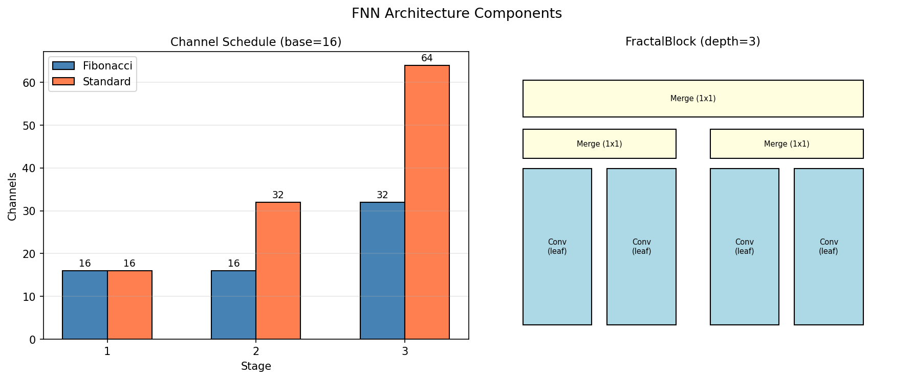
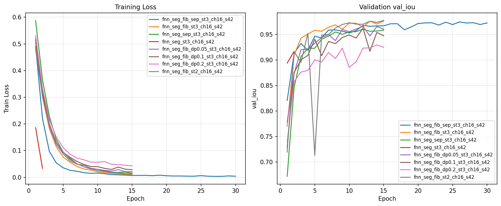
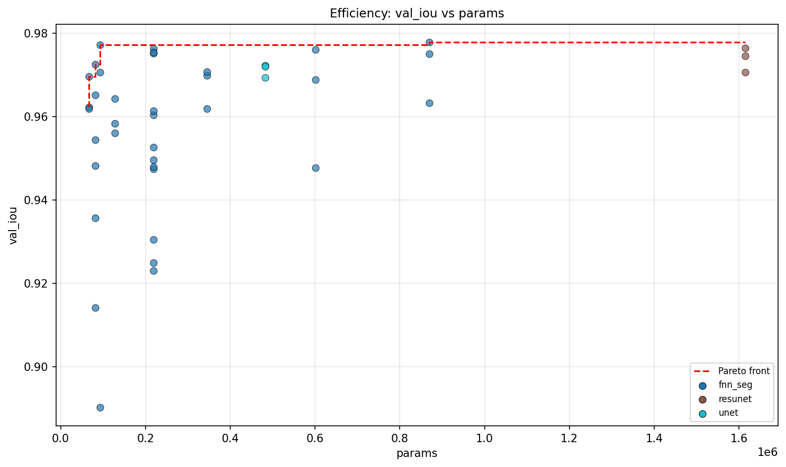
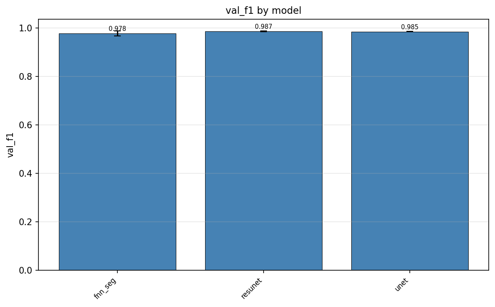
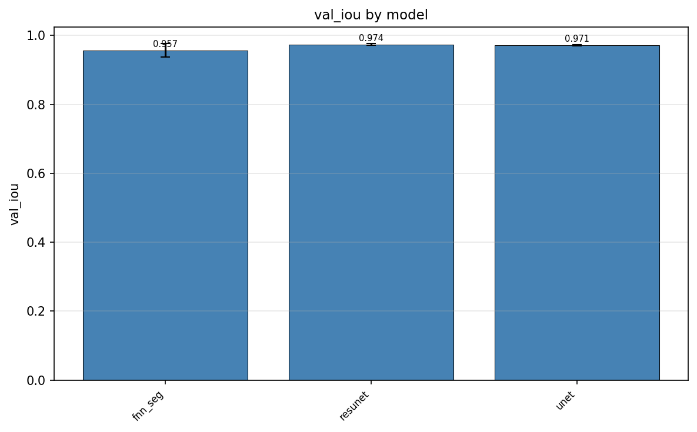
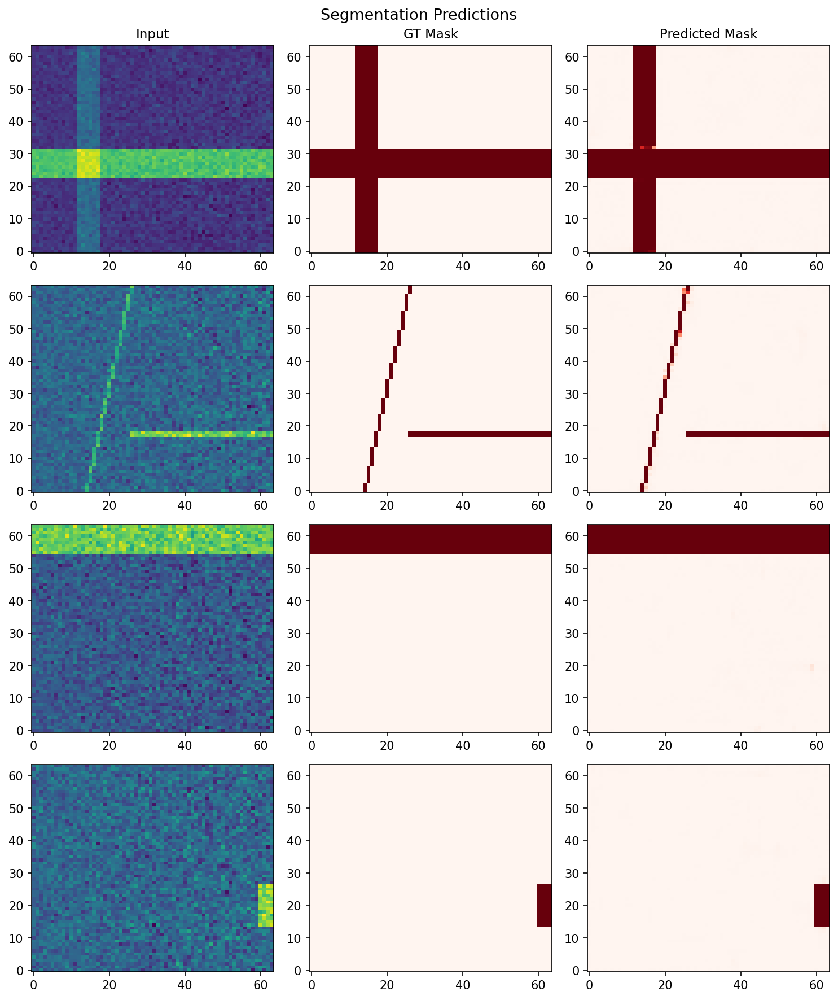
Before committing to the compute-intensive real-telescope experiments (Sections 5–6), we validated FNNSeg's architecture choices and explored two additional task formulations on a synthetic, on-the-fly RFI-injection pipeline (data/synthetic_spectrogram.py, data/inject_rfi.py): single-channel spectrograms with injected contamination drawn from five morphology types (narrowband, time-burst, broadband, diagonal, rectangle; Figure C1), generated deterministically from a seed so that every run is exactly reproducible. All experiments in this appendix use 3 seeds (123, 42, 7), a different seed set from the real-data experiments (0, 1, 2) in Sections 5–6, since this synthetic study was conducted independently and earlier; we flag this explicitly rather than imply a single unified seed protocol.
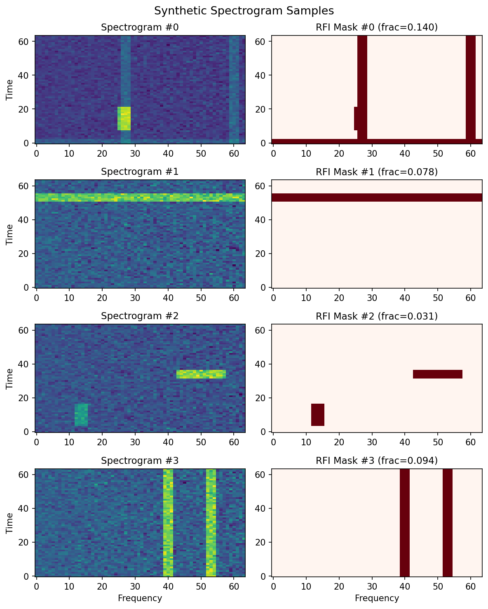
We swept four architecture factors (Fibonacci vs. standard channels, standard vs. depthwise-separable convolutions, encoder stage count, and base channel width) and drop-path rate, holding all other hyperparameters fixed, to select the configuration used for FNNSeg throughout this paper (Fibonacci = True, separable = False, drop-path = 0, stages = 3, base channels = 16).
| Variant | Fibonacci | Separable | Params | IoU | F1 |
|---|---|---|---|---|---|
| FNNSeg (selected) | Yes | No | 218,465 | 0.9757 ± 0.0006 | 0.9876 ± 0.0003 |
| Fractal + separable | Yes | Yes | 81,843 | 0.9640 ± 0.0173 | 0.9816 ± 0.0095 |
| Non-fractal + separable | No | Yes | 127,555 | 0.9596 ± 0.0042 | 0.9793 ± 0.0022 |
| Non-fractal, standard convs | No | No | 344,817 | 0.9663 ± 0.0062 | 0.9828 ± 0.0033 |
Non-fractal, standard convs ran with 2 seeds only (123, 7); all other rows use 3.
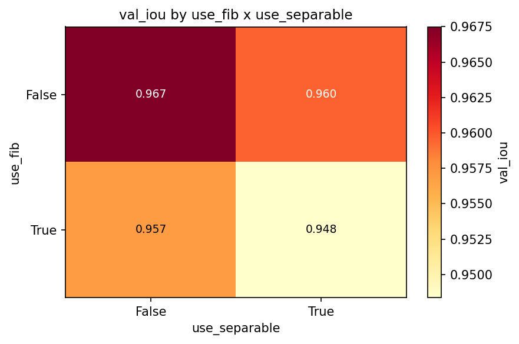
| Stages | Base ch | Params | IoU | F1 |
|---|---|---|---|---|
| 2 | 16 | 93,233 | 0.9460 ± 0.0484 | 0.9717 ± 0.0260 |
| 3 | 16 | 218,465 | 0.9757 ± 0.0006 | 0.9876 ± 0.0003 |
| 4 | 16 | 601,393 | 0.9642 ± 0.0148 | 0.9816 ± 0.0078 |
| 3 | 8 | 66,201 | 0.9646 ± 0.0044 | 0.9818 ± 0.0023 |
| 3 | 32 | 869,057 | 0.9721 ± 0.0077 | 0.9858 ± 0.0041 |
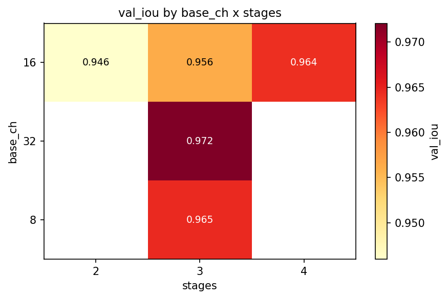
| Drop-path rate | IoU | F1 |
|---|---|---|
| 0.0 (selected) | 0.9757 ± 0.0006 | 0.9876 ± 0.0003 |
| 0.05 | 0.9582 ± 0.0048 | 0.9785 ± 0.0026 |
| 0.1 | 0.9484 ± 0.0011 | 0.9733 ± 0.0006 |
| 0.2 | 0.9261 ± 0.0039 | 0.9612 ± 0.0021 |
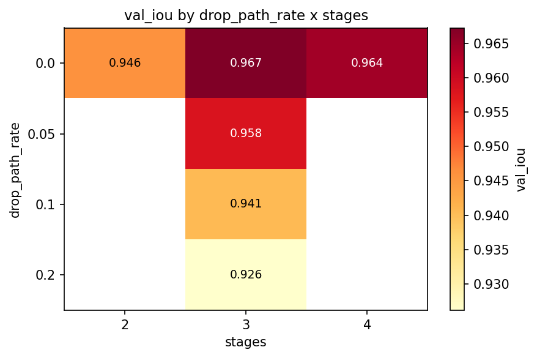
drop_path_rate = 0 in Sections 3–6.For reference, U-Net and ResU-Net baselines trained on the same synthetic task scored IoU = 0.9712 ± 0.0016 / F1 = 0.9853 ± 0.0008 (U-Net, 482,449 params) and IoU = 0.9738 ± 0.0030 / F1 = 0.9867 ± 0.0016 (ResU-Net, 1,614,833 params): the selected FNNSeg configuration (218,465 params) outperforms both on this synthetic benchmark too, consistent with the real-telescope results in Section 6.
As a secondary task, we trained classifiers to predict which of the five morphology types (Figure C1) is present in a spectrogram, using a global classification head in place of FNNSeg's segmentation decoder.
| Model | Params | Val. accuracy |
|---|---|---|
| FNN (fib=True, sep=False) | 26,202 | 0.375 ± 0.017 |
| FNN (fib=False, non-fractal) | 42,138 | 0.389 ± 0.024 |
| FNN (fib=True, sep=True) | 9,152 | 0.342 ± 0.046 |
| CNN baseline | 6,418 | 0.336 ± 0.032 |
| Transformer (tiny ViT) | 74,954 | 0.283 ± 0.052 |
| RNN (LSTM) | 145,802 | 0.279 ± 0.033 |
| ResNet-cls | 874,458 | 0.323 ± 0.033 |
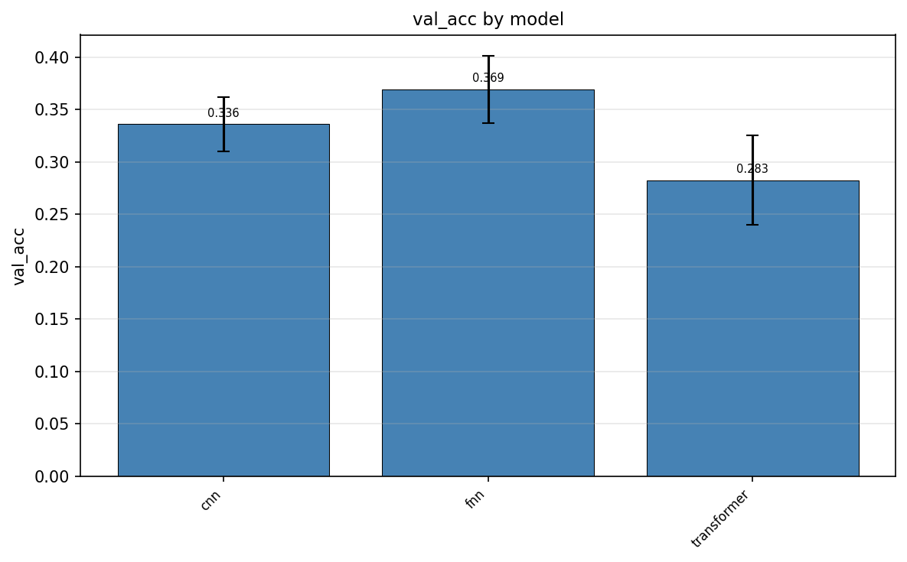
All architectures remain well above chance (20%) but plateau at 28–39% accuracy, notably lower than their segmentation counterparts' near-ceiling performance, and the non-fractal FNN variant slightly outperforms both fractal variants here, the opposite ranking from the segmentation ablation (Table C1). A plausible explanation is that whole-image classification requires global discrimination between visually similar morphology classes (e.g. broadband vs. rectangle), a different inductive bias than the fractal block's local, multi-path feature reuse, which is advantageous for dense per-pixel segmentation but not demonstrably so for single-label classification. This task was not pursued further; segmentation remained the focus of the dissertation and this paper.
We additionally trained FNNInpaint, a dual-head variant of FNNSeg that predicts both the binary RFI mask and a pixel-wise reconstruction of the clean (RFI-free) spectrogram, evaluated with mask IoU, PSNR, and SSIM against the known clean ground truth available in the synthetic pipeline.
| Config | Params | Mask IoU | PSNR (dB) | SSIM |
|---|---|---|---|---|
| fib=T, sep=F, dp=0.1, ch=16 | 326,930 | 0.9503 ± 0.0095 | 2.00 ± 3.03 | 0.190 ± 0.111 |
| fib=T, sep=T, dp=0.0, ch=16 | 127,972 | 0.9565 ± 0.0024 | 12.23 ± 5.80 | 0.488 ± 0.108 |
| fib=T, sep=F, dp=0.0, ch=16 | 326,930 | 0.9622 ± 0.0035 | 0.77 ± 1.57 | 0.155 ± 0.110 |
| fib=T, sep=F, dp=0.0, ch=32 | 1,301,410 | 0.9641 ± 0.0084 | 2.63 ± 2.94 | 0.285 ± 0.135 |
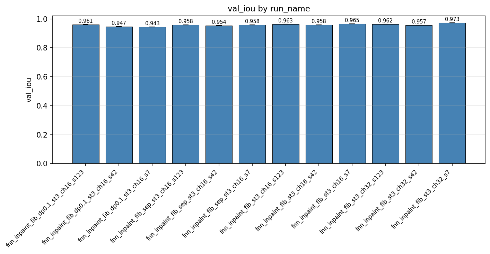
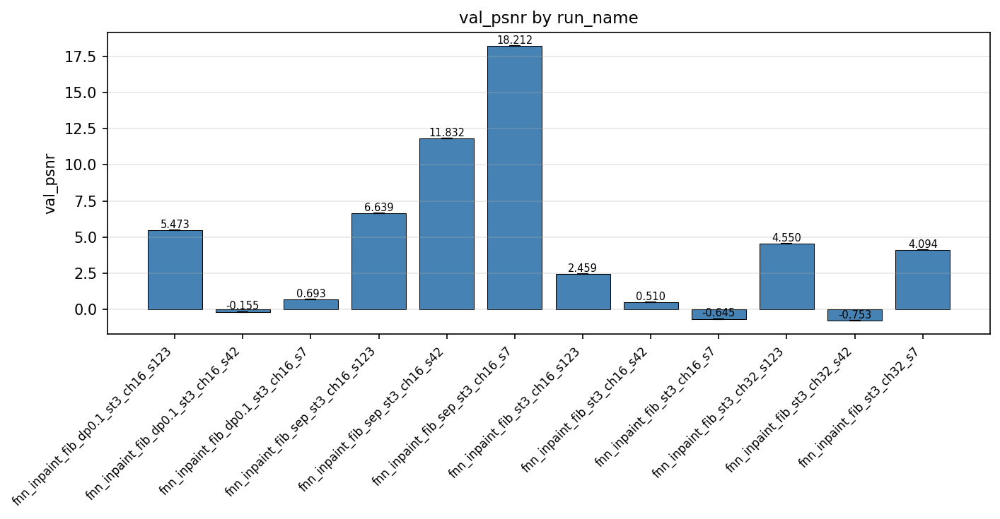
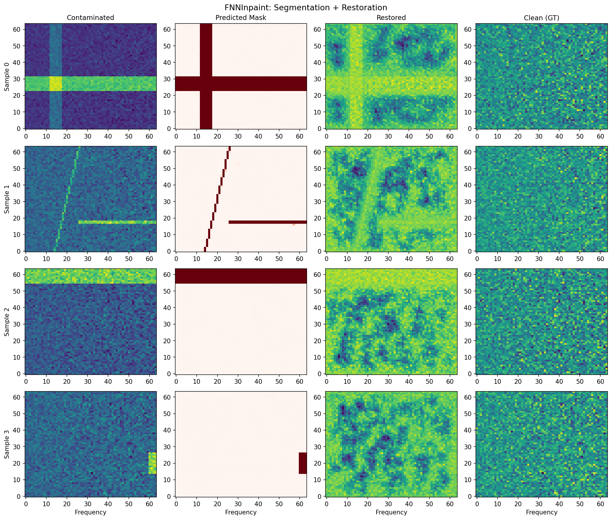
Mask localisation is consistently strong (IoU 0.95–0.96, comparable to the segmentation-only task), but pixel-value restoration is weak and highly variable across seeds: PSNR ranges from under 1 dB to 12 dB with standard deviations often exceeding the mean, and SSIM remains below 0.5 in every configuration tested. The smallest, separable configuration (127,972 params) unexpectedly achieved the best reconstruction quality, so restoration fidelity did not scale predictably with capacity in this preliminary setting. We conclude that FNNInpaint reliably answers where contamination is but not yet what the clean signal looked like; joint detection-and-restoration remains open future work (cf. Zhang et al., 2024), consistent with Section 8.
Using the selected FNNSeg configuration, we swept injected-RFI signal-to-noise ratio (SNR) from 0.5 to 20 on the synthetic segmentation task (single seed).
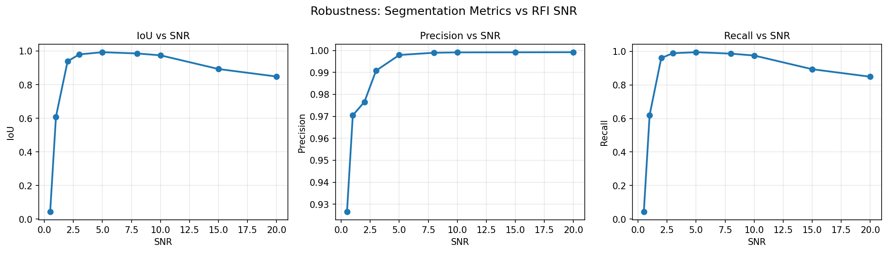
IoU rises sharply from 0.04 at SNR = 0.5 (RFI barely distinguishable from noise) to a peak of 0.993 at SNR = 5, then gradually declines to 0.848 by SNR = 20. The decline at high SNR is unexpected and not fully explained by this preliminary single-seed sweep; we note it as an open question (possibly related to how the fixed binarisation threshold used for IoU interacts with saturating injected amplitudes at extreme SNR) rather than a settled finding, and recommend a multi-seed follow-up before drawing firm conclusions.